Background: Network Performance Analysis¶
Networking systems have been developed for over half a century and the analysis of processing networks and communications networks began even earlier. As computing power has increased, the field of network performance analysis at design-time has evolved into two main paradigms: (1) network performance testing of the applications and system to be deployed to determine performance and pitfalls, and (2) analytical models and techniques to provide application network performance guarantees based on those models. The first paradigm generally involves either arbitrarily precise network simulation, or network emulation, or sub-scale experiments on the actual system. The second paradigm focuses on formal models and methods for composing and analyzing those models to derive performance predictions.
We focus on the second paradigm, using models for predicting network performance at design-time. This focus comes mainly from the types of systems to which we wish to apply our analysis: safety- or mission-critical distributed cyber-physical systems, such as satellites, or autonomous vehicles. For such systems, resources come at a premium and design-time analysis must provide strict guarantees about run-time performance and safety before the system is ever deployed.
For such systems, probabilistic approaches do not provide high enough confidence on performance predictions since they are based on statistical models [Cruz1991]. Therefore, we must use deterministic analysis techniques to analyze these systems.
Min-Plus Calculus¶
Because our work and other work in the field, e.g. Network Calculus, is based on Min-Plus Calculus, or (min,+)-calculus, we will give a brief overview of it here, adapted from [Thiran2001].
Min-plus calculus, 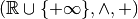, deals with wide-sense increasing functions :
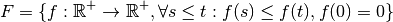
which represent functions whose slopes are always . Intuitively this makes sense for modeling network traffic, as data can only ever by sent or not sent by the network, therefore the cumulative amount of data sent by the network as a function of time can only ever increase or stagnate. A wide-sense increasing function can further be classified as a sub-additive function if
Note that if a function is concave with 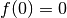, it is sub-additive, e.g. 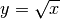.
The main operations of min-plus calculus are the convolution and deconvolution operations, which act on sub-additive functions. Convolution is a function of the form:
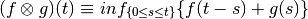
Note that if the functions 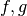 are concave, this convolution simplifies into the computation of the minimum:
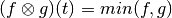
Convolution in min-plus calculus has the properties of
- closure: 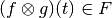,
- Associativity,
- Commutativity, and
- Distributivity
Network Calculus¶
Network Calculus [Cruz1991, Cruz1991a, Thiran2001] provides a modeling and analysis paradigm for deterministically analyzing networking and queueing systems. Its roots come from the desire to analyze network and queuing systems using similar techniques as traditiional electrical circuit systems, i.e. by analyzing the convolution of an input function with a system function to produce an output function. Instead of the convolution mathematics from traditional systems theory, Network Calculus is based on the concepts of (min,+)-calculus, which we will not cover here for clarity, but for which an explanation can be found in my proposal and thesis.
By using the concepts of (min,+)-calculus, Network Calculus provides a way to model the application network requirements and system network capacity as functions, not of time, but of time-window size. Such application network requirements become a cumulative curve defined as the maximum arrival curve. This curve represents the cumulative amount of data that can be transmitted as a function of time-window size. Similarly, the system network capacity becomes a cumulative curve defined as the minimum service curve. These curves bound the application requirements and system service capacity.
Note that sub-additivity of functions is required to be able to define meaningful constraints for network calculus, though realistically modeled systems (in Network Calculus) will always have sub-additive functions to describe their network characteristics (e.g. data serviced or data produced). This sub-additivity comes from the semantics of the modeling; since the models describe maximum data production or minimum service as functions of time-windows, maximum data production over a longer time window must inherently encompass the maximum data production of shorter time-windows.
{kind=link}
Figure 1: Network Calculus arrival curve ( ). Reprinted from
[Thiran2001].
). Reprinted from
[Thiran2001].
{kind=link}
Figure 2: Network Calculus service curve ( ). Reprinted from
[Thiran2001].
). Reprinted from
[Thiran2001].
Network calculus uses (min,+)-calculus convolution to compose the application requirement curve with the system service curve. The output of this convolution is the maximum data arrival curve for the output flow from the node providing the service. By analyzing these curves, bounds on the application’s required buffer size and buffering delay can be determined.
{kind=link}
Figure 3: Schematic deptiction of the buffer size (vertical difference) and delay (horizontal difference) calculations in Network Calculus. Reprinted from [Thiran2001].
With these bounds and the convolution, developers can make worst-case performance predictions of the applications on the network. These bounds are worst-case because the curves are functions of time-window size, instead of directly being functions of time. This distinction means that the worst service period provided by the system is directly compared with the maximum data production period of the application. Clearly such a comparison can lead to over-estimating the buffer requirements if the application’s maximum data production does not occur during that period.
Real Time Calculus¶
Real-Time Calculus[Thiele2000] builds from Network Calculus, Max-Plus Linear System Theory, and real-time scheduling to analyze systems which provide computational or communications services. Unlike Network Calculus, Real-Time Calculus (RTC) is designed to analyze real-time scheduling and priority assignment in task service systems. The use of (max,+)-calculus in RTC allows specification and analysis not of only the arrival and service curves described above for Network Calculus, but of upper and lower arrival curves (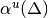 and 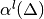) and upper and lower service curves (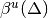 and 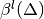). These curves represent the miniumum and maximum computation requested and computation serviced, respectively. An overview of RTC is shown below.
{kind=link}
Figure 4: Overview of Real-Time Calculus’ request, computation, and capacity models.
is the request function that represents the amount of
computation that has been requested up to time  , with
associated minimum request curve, . is
the total amount of computation delivered up to time , with
associated delivered computation bound .
, with
associated minimum request curve, . is
the total amount of computation delivered up to time , with
associated delivered computation bound .  and
are the capacity function and remaining capacity functions
which describe the total processing capacity under full load and the
remaining processing capacity, respectively. and
are bounded by the delivery curve and the remaining
delivery curve 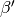.
and
are the capacity function and remaining capacity functions
which describe the total processing capacity under full load and the
remaining processing capacity, respectively. and
are bounded by the delivery curve and the remaining
delivery curve 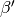.
RTC allows for the analysis of task scheduling systems by computing
the request curve for a task model which is represented as a directed
acyclic graph (DAG), the task graph . The graph’s
vertices represent subtasks and each have their own associated
required computation time 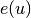, and relative deadline
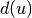 specifying that the task must be completed
units of time after its triggering. Two vertices in may
be connected by a directed edge 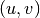 which has an associated
parameter 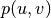 which specifies the minimum time that must
elapse after the triggering of  before
before  can be
triggered. RTC develops from this specification the minimum
computation request curve and the maximum computation
demand curve . Finally, the schedulability of a task
is determined by the relation:
can be
triggered. RTC develops from this specification the minimum
computation request curve and the maximum computation
demand curve . Finally, the schedulability of a task
is determined by the relation:
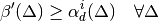
which, if satisfied, guarantees that task will meet all of its deadlines for a static priority scheduler where tasks are ordered with decreasing priority. Note that the remaining delivery curve 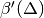 is the capacity offered to task after all tasks 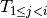 have been processed. Similarly to Network Calculus, RTC provides analytical techniques for the computation of performance metrics such as computation backlog bounds:
which is equivalent to the network buffer bound derived in Network Calculus.
| [Cruz1991] | R. L. Cruz. A calculus for network delay-I: Network elements in isolation. IEEE Transactions on Information Theory, 37(1):114-131, 1991 |
| [Cruz1991a] | R. L. Cruz. A calculus for network delay-II: Network analysis. IEEE Transactions on Information Theory, 37(1):132-141, 1991 |
| [Thiran2001] | J.-Y. Le Boudec and P. Thiran. Network Calclulus: A Theory of Deterministic Queuing Systems for the Internet. Springer-Verlag, Berlin, Heidelberg, 2001. |
| [Thiele2000] | L. Thiele, S. Chakraborty, and M. Naedele. Real-time calculus for scheduling hard real-time systems. In ISCAS, pages 101-104, 2000. |